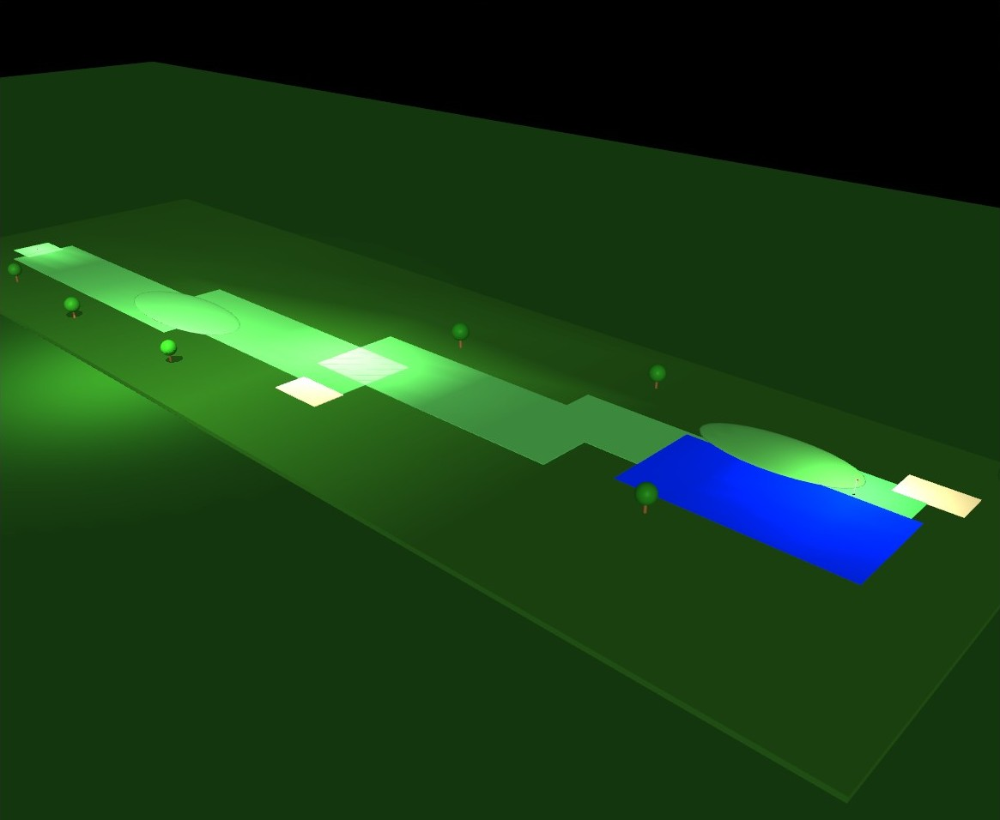
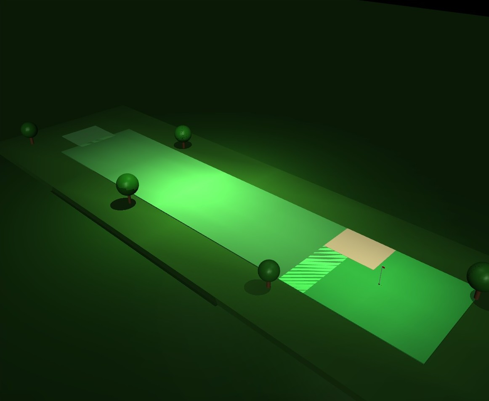
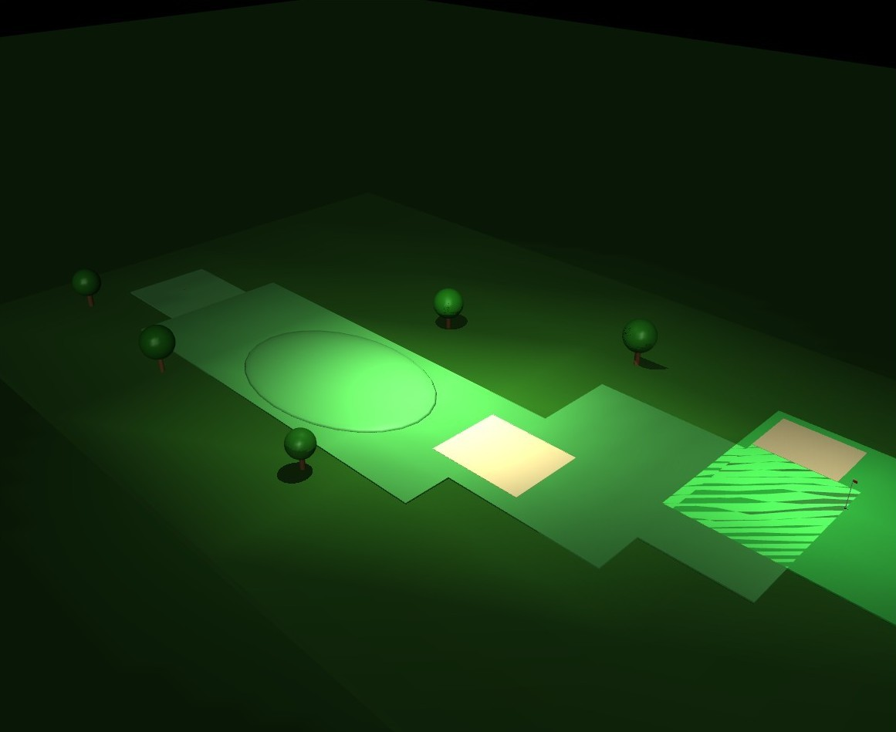
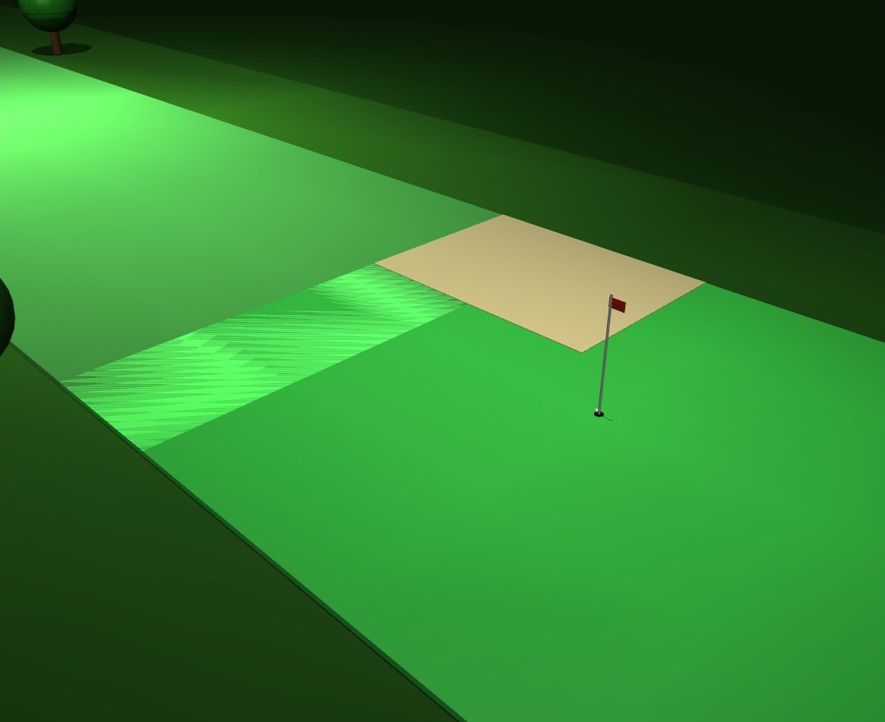
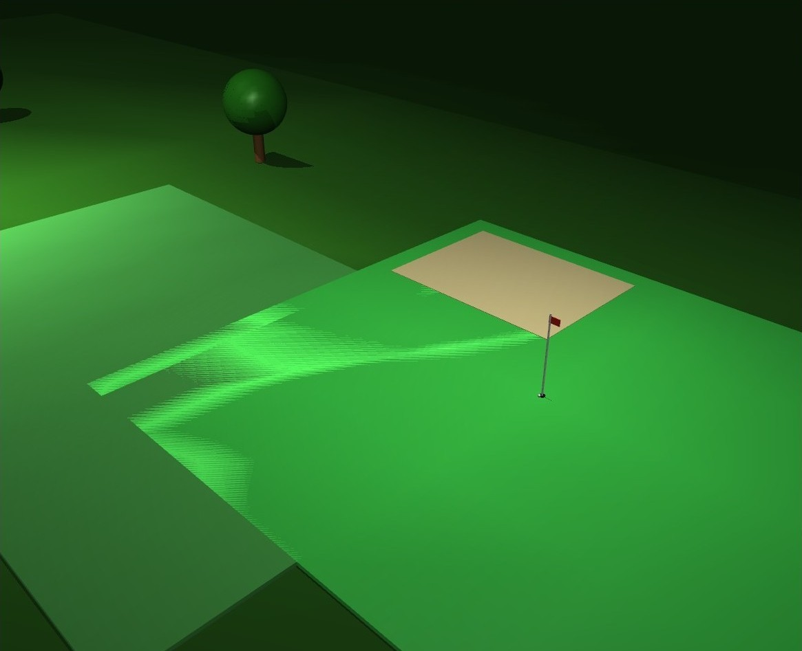
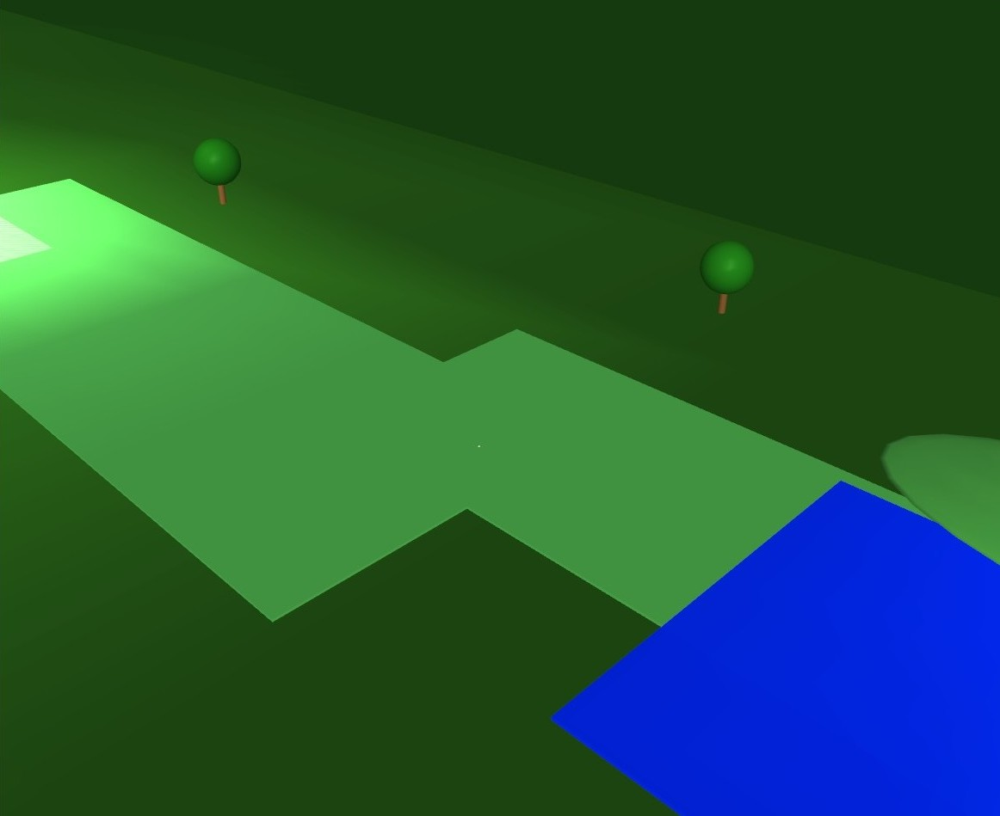
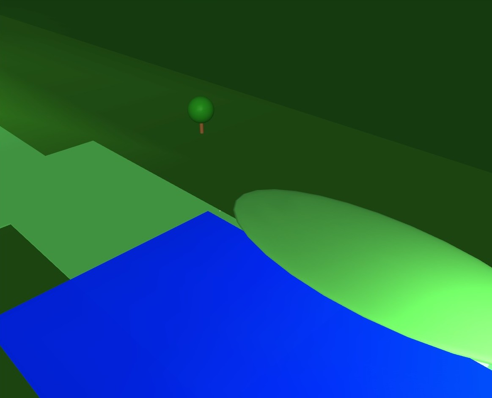
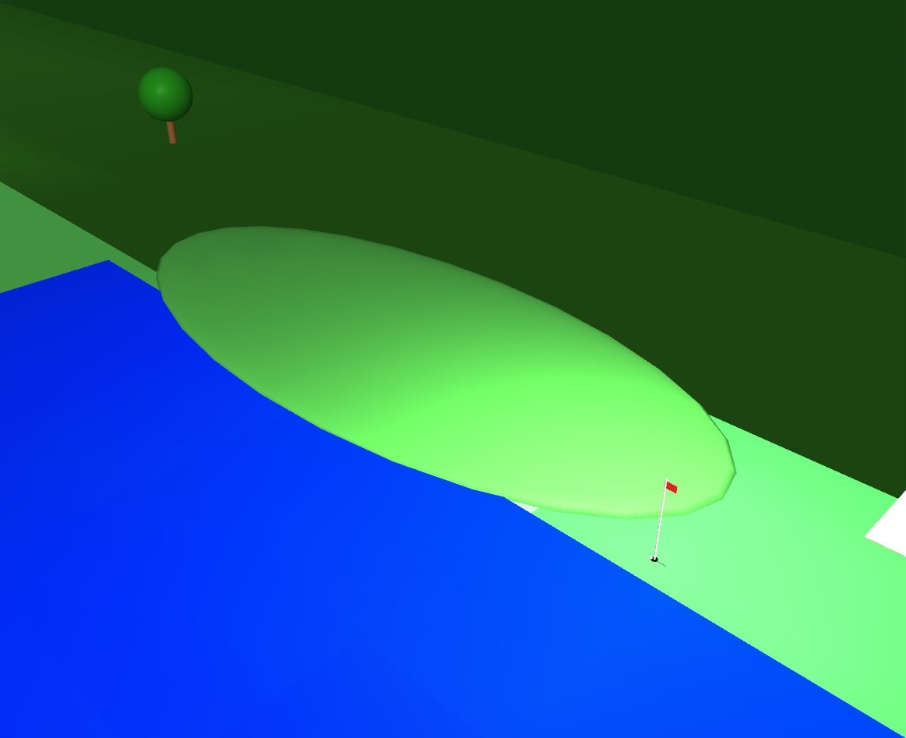

Simulation & Optimization
Golf Shot Optimization
A MuJoCo golf simulation with a CMA-ES optimizer that holed shots on two courses within 144 rollouts and cut a hazard course from 3 strokes to 2 with full-horizon sequence planning.

The Problem
Placeholder
Placeholder
Approach
Placeholder
- Built a MuJoCo golf simulation with aerodynamic drag, wind, and terrain-dependent rolling friction, and a CMA-ES framework to optimize launch parameters across three courses of increasing difficulty
- Reformulated an initial 16-parameter robot-arm swing (aim, backswing, 14 joint torques) into a 3-parameter launch model, removing club–ball contact noise and making convergence tractable
- Added a restart strategy with a shrinking search radius to escape local minima near the hole


Results
Placeholder
- Reached simulated holes-in-one on both short courses within 9 CMA-ES generations (144 simulation rollouts), including a course with a 1.5 m/s crosswind and landing-terrain penalties
- Implemented full-horizon sequence optimization over joint multi-shot decision vectors, completing the hazard course in 2 strokes versus 3 for greedy per-stroke re-planning





What It Means
Placeholder
My Contribution
Placeholder